图论
图论部分转载于Shu_Yu_Mo の blog
2-SAT
SomeThing
- 又名2-SAT-2
- 判断有无解
- 确定变量
- 确定关系表达式
- 变量的取值有两种
- %d - SAT 表达式有多少个变量
- SAT - %d 每个变量的情况个数
加边规则
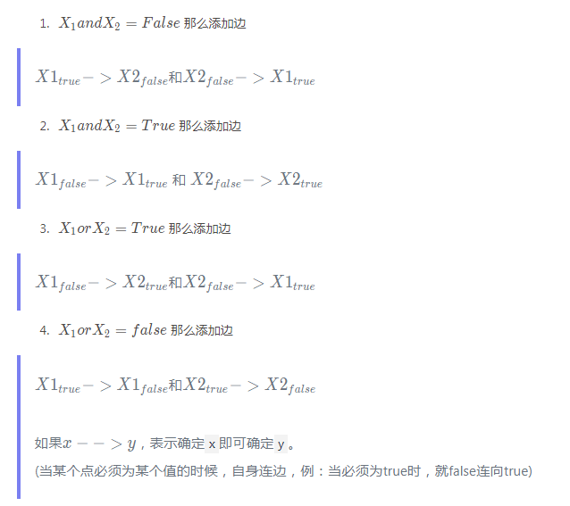
如果$x−−>yx –> yx−−>y$，表示确定x即可确定y。
(当某个点必须为某个值的时候，自身连边，例：当必须为true时，就false连向true)
例题
- POJ2446
- HDU3622
- UVA1514 Piece it together
- UVA1086 The Ministers’ Major Mess
- HDU4306
二分图
SomeThing
此图是树=>此图是二分图此图是二分图=>此图是树二分图两边的点数量为n,m，匹配值是x，最大独立集数量为n+m-x
例题
给出一张图，删一条边，使之成为二分图（CF 19E Fairy
最大团
SomeThing
- 给一张图，求最大团 —>
NPC。 - 所以很多问题中，求最大团的图有很多特殊性质。
- 求最大团的方法 （wait）。
- 补图 —>
把图之前的图上的边全都删掉，没有的边全都加上。 - 原图的反图中的最大独立集就是最大团
例题
- 【HEOI2012】朋友圈
最大独立集
- 原图的反图就是最大团。
- 在二分图中，独立集的个数为，n+m−x

CSP-Algorithm
图论
- Tarjan
- 二分图
- 2-SAT
- 最小生成树
- 最短路
模拟
- 灭鼠计划
- 猪国杀
- 立体图
- 操作系统
- 靶形数独
- [THUPC2018]组合数问题
SomeThing
- 题目中的一些奇怪的数字为突破口
- cdqz.openjudge.cn
动态规划
DP的三种方法
- 记忆化搜索
- 用自己算别人
- 用别人算自己
排列类dp
- 把数字从小到大or从大到小一个一个插入
- 一个序列的前缀也是一个前缀
- 在1~k的排列中加入i，可以将大于等于i的数字全部加1，然后再插入i。
例题
例题1：求在一颗无限大的满二叉树上取n个点取到第k层的方案数。一个非根节点只有当它的父亲节点被选择是才可以被选。
思路：把根拆掉变成两颗更小的树。
$$ans = f[n][n] - f[n][k-1]$$
例题2：
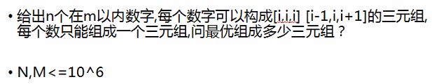
状态：$f[i][j][k]$ 用了j个i-1，i，i+1与k个i，i+1，i+2的方案，枚举l个i+1，i+2，i+3。

题目链接：https://www.luogu.org/problem/CF1110D
例题3：
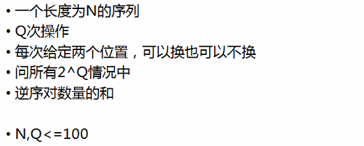
一般思路：维护前i轮下来逆序对的和。但是不知道转移时交换的两个数的大小关系。很显然，这样不行。
提示：期望的和=和的期望 -> 所有方案的逆序对数=枚举两个位置交换，在所有方案中有多少种方案会形成逆序对。
$f[i][j][k]$表示在i轮之后i,j小于i,k的方案数。 求有多少j>k但i,j小于i,k。
我们考虑暴力枚举i，j来统计逆序对数，那么$\sum 逆序对数 = \sum 方案(\sum i *\sum j)$。
l是用来枚举位置j交换后会对增加/减少多少逆序对。
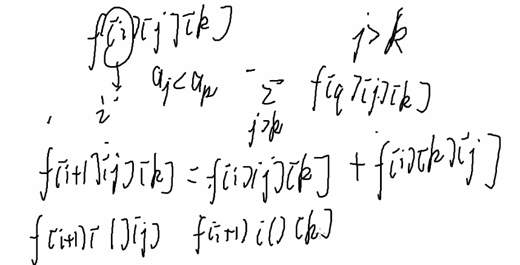
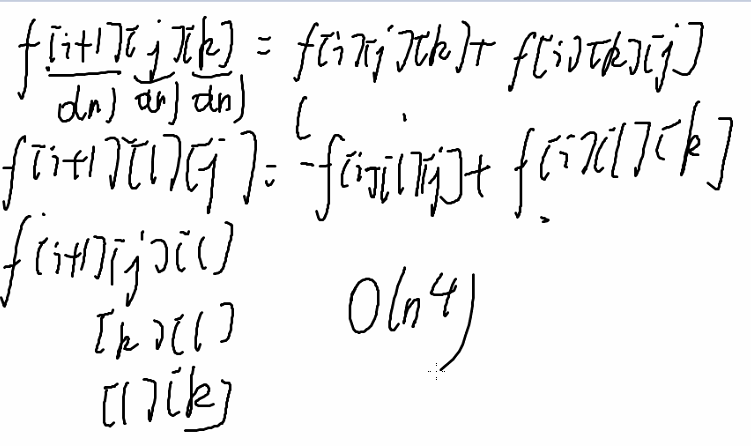
题目来源：
At coder Inversion Sun 030D(大概是这个)
写题
流程
- 想思路
- 翻译成代码
- 调试
调试技巧
对拍
- 工具
- 你的程序
- 暴力程序
- 数据生成器
- 对拍程序
结果
- 一样：
- 都对了
- 错到一块了qwq
- 不一样：
- 至少一个错的
- 帮你找到调试用的数据
用处： 帮你找到一组错误的数据
效率：
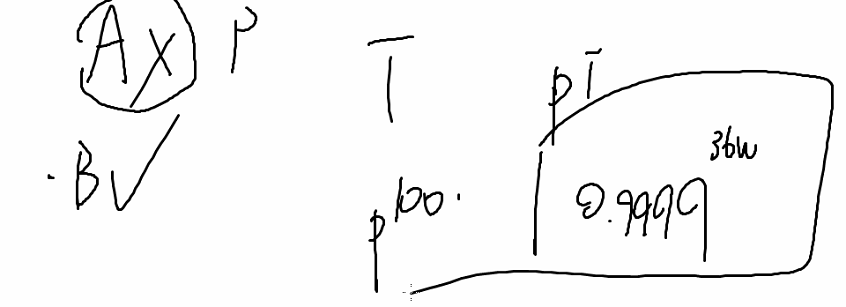
写错了 -> 一般很快就出问题
- 对拍程序：

1 |
|
- 产生1~n的排列
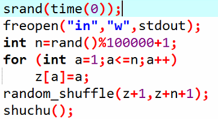
- windows产生rand(rand()自身最大值很小)：
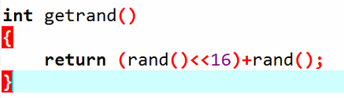
- 树的生产方法
- 纯随机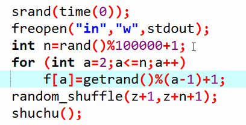
- 扫把图：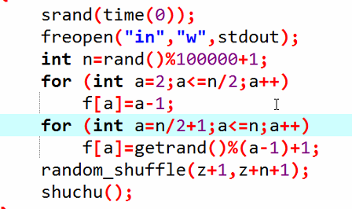
- 生成图
- 直接生产
- 用map or set把重边去掉
- 连通图：先生成一颗树，再随机加边
- DAG：i -> j 当且仅当i < j
- 强制在线：把暴力写入数据生成器中。可以直接生产离线数据，方便对拍，拍完了把代码改成强制在线。
数论
exgcd
用法：求$ax+by=gcd(a,b)$的一组整数解，或者判断$ax+by=k$是否有解
线性筛
筛素数核心思想：一个数大于1的倍数一定是合数。
欧拉筛分：一个数，一定能被质因数分解。
$x=p1^k1p2^k2……*pn^kn$
$x=p1p1^{k1-1}*p2^k2……*pn^kn$
欧拉函数
phi(i)表示小于等于i的数里面与i互素的数的个数
$phi(x)=x(1-1/p1)(1-1/p2)…(1-1/pn)$
求一个数的phi <==> 求这个数的质因数分解
性质：
- $phi(1)=1$(唯一和1互质的数就是1本身)
- 若$n$是素数，则$phi(n)=n-1$
- 若$n$是合数，则$phi(n)<n-1$
- 当$n$为奇数时，则$phi(2n) = phi(n)$
- 若$a$、$b$互质，则$phi(ab)=phi(a)phi(b)$
组合数
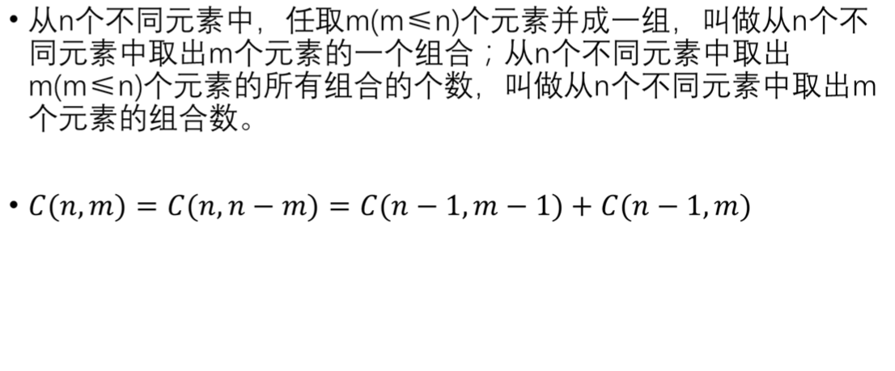
#### 逆元
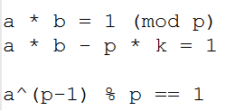
欧拉定理&feim
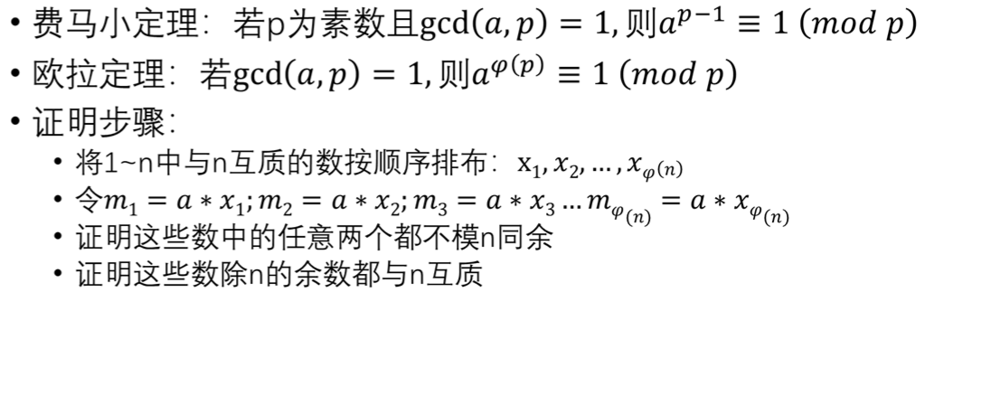

Lucas定理
$Lucas(n,m,p)=C(n%p,m%p)*Lucas(n/p,m/p,p)$
中国剩余定理(crt)
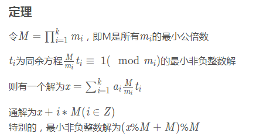
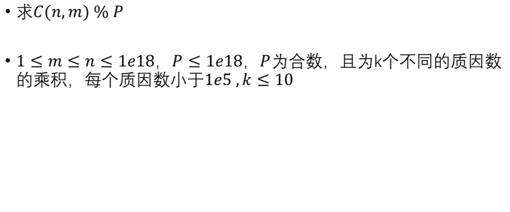
先将P分解质因数，得到其质因子
用Lucas定理求$C(n,m)=X_i(mod \ pi)$
合并两个相邻的同余方程，要求gcd(p1,p2) = 1
C(n,m)=x1(mod p1)
C(n,m)=x2(mod p2)
C(n,m)=p1*k1+x1=p2*k2+x2 ==> exgcd
p1*k1 - p2*k2 = x2 - x1
用exgcd求出一组整数解(k1,k2)
C(n,m) = p1 * k1 + x1 (mod p1 * p2)
高斯消元
【HNOI2013】游走
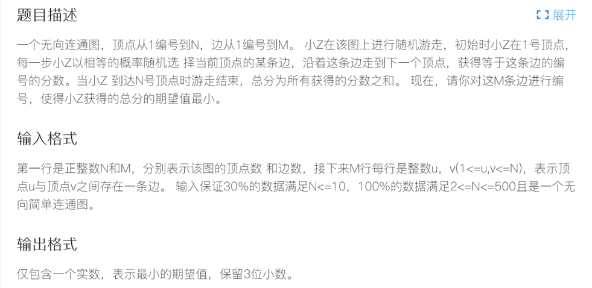
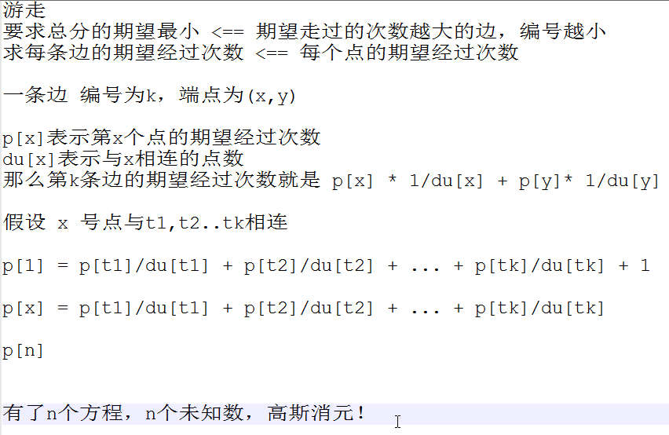
大步小步算法(BSGS)
给定a，y，p，求最小的非负整数x，使得$a^x=y(mod\ p)$
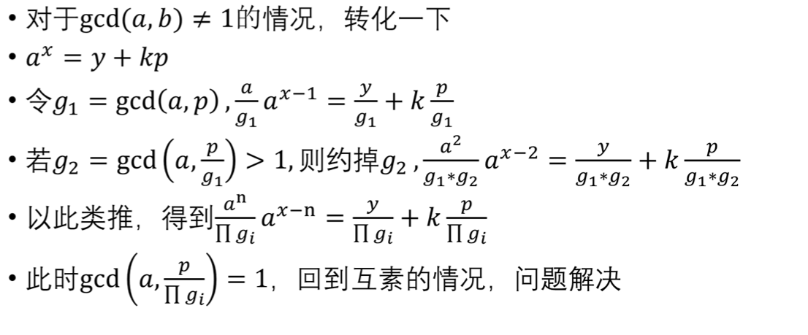
Bzoj2242：[SDOI2011]计算器
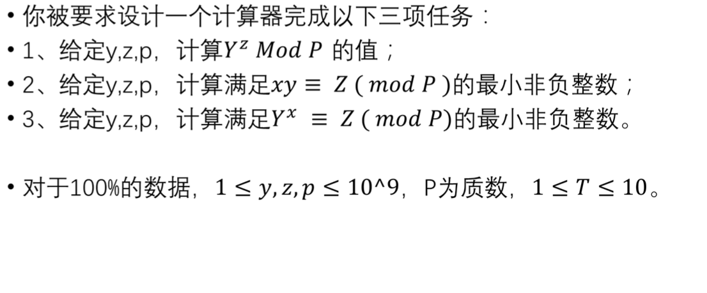
例题
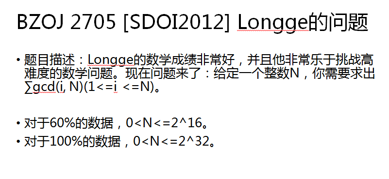
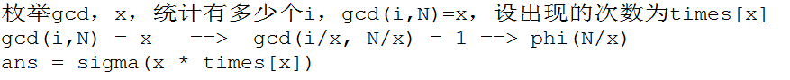
CSP-S会涉及到的数学相关的知识
- 快速幂
- 矩阵乘法
- GCD/exGCD
- 筛素数/素数判断
- 欧拉函数
- 逆元
- 组合数取模/卢卡斯定理
- 中国剩余定理
- 高斯消元
模拟
例题
- 时间复杂度
- P3585 [POI2015]PIE
- P3492 [POI2009]TAB-Arrays
贪心
例题
P3419[POI2005]SAM-Toy Cars
贪心策略：优先替换下一次出现时间晚的玩具，因为下一次出现得越晚，它闲置的时间最长，可以少占用地板的空间。
[CF898D]Alarm Clock
贪心策略：优先删每一段时间靠后的闹钟
P3545[POI2012]HUR-Warehouse Store
[CF954E] Water Taps
P3457 [POI2007]POW-The Flood
P3566 [POI2014]KLO-Bricks
考试策略
- 开考前把考试前最终需要检查的东西写一下。
- 前10~15分钟读题：读懂题，知道题在干什么，知道样例是怎么算的。
- 5分钟选择做题顺序，这时候还没有想出来题还没有怎么做，凭直觉把题目安装难度排序。
- 约1.5h写完每个题目的暴力，理想暴力分数：T1 100分，T2 60分，T3 30分。
- 接下来按照平时做题的方法去写一百分/更多部分分的做法。
- 最后10到15分钟停止虐键盘，检查文件，编译，调试信息，数组大小，初始化等等。